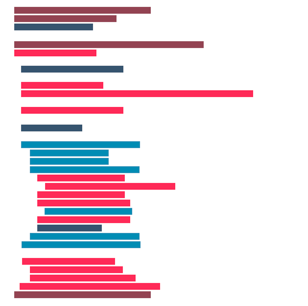
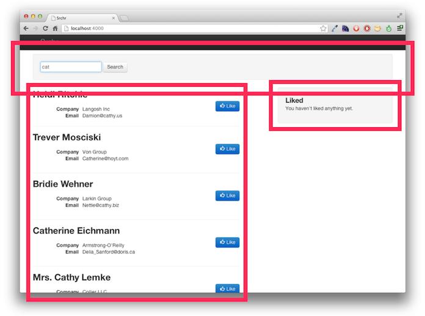

مررنا جميعًا بموقف كهذا: بضع سطور JavaScript كُتبت لتؤدّي وظيفة صغيرة ثمّ تضخمت مع الوقت لتبلغ بضع عشرات من السطور، ثم مئات السطور... أصبحت تقبل معاملات أكثر، وتختبر شروطًا أكثر، ثم أتى ذلك اليوم: تقرير بعلّة، التطبيق لا يعمل كما ينبغي! وحينئذ يكون فكّ غموض هذه السطور المتشابكة مسؤوليّتنا.
مع تزايد الأعباء الّتي نُلقيها على مشروعنا من جهة المتصفّح، يتّضح أمامنا أمران: أوّلهما: تجربة التطبيق بالنقر على الأزرار والروابط سريعًا ليس حلًّا عمليًّا، بل لا بدّ من الاختبارات المُؤتمتة حتّى نثق باستقرار مشروعنا؛ وثانيهما: علينا (غالبًا) أن نُغيّر كيفيّة كتابة برامجنا بما يُتيح لنا كتابة الاختبارات.
هل أنا جادّة؟ نعم! لأنّنا وإن علمنا فائدة الاختبارات المؤتمتة، فإنّ أكثرنا اليوم لا يكتبون سوى اختبارات التكامل (integration tests). لا يُقلّل هذا من أهمّيّة اختبارات التكامل، فهي تُركّز على كيفيّة عمل أجزاء التّطبيق سويّةً، إلّا أنّها لا تستطيع إخبارنا إن كانت الوحدات المنفصلة لتطبيقنا تعمل كما ينبغي لها.
هنا تبرز ضرورة اختبارات الوحدات (unit tests)، وستكون كتابة اختبارات الوحدات صعبة جدًّا إن لم يكن نصّ JavaScript الّذي كتبناه ملائمًا للاختبار.
كتابة اختبارات التكامل أمر بسيط عادةً: كل ما نفعله كتابة برنامج بسيط يصف كيف يتفاعل المُستخدم مع تطبيقنا، وما يجب أن يتوقّعه المستخدم عندئذٍ. إحدى برامج أتمتة المُتصفّحات الشّهيرة Selenium. وفي Ruby يُسهل Capybara التّعامل مع Selenium، وتتوفّر أدوات مشابهة كثيرة للغات الأخرى.
فيما يلي اختبار تكامل لجزء من تطبيق بحث:
def test_search
fill_in('q', :with => 'cat')
find('.btn').click
assert( find('#results li').has_content?('cat'), 'Search results are shown' )
assert( page.has_no_selector?('#results li.no-results'), 'No results is not shown' )
end
إذن فاختبار التكامل يهتمّ بتفاعل المستخدم مع التّطبيق، أمّا اختبار الوحدات فتركيزه ضيّق ويقتصر على جزء صغير من البرنامج:
عندما أستدعي دالّةً (function) بمُدخلات معيّنة، فما المُخرجات المُتوقّعة؟
يصبح إخضاع التّطبيقات المكتوبة بأسلوب إجرائي (procedural) تقليديّ لاختبار الوحدات أمرًا شديد الصعوبة، وكذلك صيانتها وتنقيحها والبناء عليها. ولكن عندما نكتب نصوص برامجنا وفي ذهننا الحاجة لإجراء اختبارات الوحدات في المستقبل، فسنجد أنّ كتابة هذه الاختبارات أمر يسير، وسينعكس ذلك بالإيجاب على نصوصنا البرمجية كذلك.
لنفهم ما أتحدّث عنه، دعنا نُلقِ نظرةً على تطبيق بحث بسيط:
عندما يكتب المستخدم عبارة للبحث عنها، يُرسل التّطبيق طلب XMLHttpRequest للخادوم يطلب منه البيانات المُوافقة. يُجيبه الخادوم بالبيانات، مُصاغاة بـJSON، ليتلقّاها التطبيق ويعرضها في الصّفحة مُستخدمًا أدوات القولبة المُتوفّرة للمتصفّحات. يستطيع المستخدم أن ينقر على إحدى نتائج البحث ليُشير "بإعجابه" بها؛ وعندما يفعل ذلك، يُضاف اسم الشّخص الّذي أعجبه إلى قائمة "الإعجابات" على يمين الصّفحة.
يمكن كتابة هذا البرنامج بأسلوب تقليدي كما يلي:
var tmplCache = {};
function loadTemplate (name) {
if (!tmplCache[name]) {
tmplCache[name] = $.get('/templates/' + name);
}
return tmplCache[name];
}
$(function () {
var resultsList = $('#results');
var liked = $('#liked');
var pending = false;
$('#searchForm').on('submit', function (e) {
e.preventDefault();
if (pending) { return; }
var form = $(this);
var query = $.trim( form.find('input[name="q"]').val() );
if (!query) { return; }
pending = true;
$.ajax('/data/search.json', {
data : { q: query },
dataType : 'json',
success : function (data) {
loadTemplate('people-detailed.tmpl').then(function (t) {
var tmpl = _.template(t);
resultsList.html( tmpl({ people : data.results }) );
pending = false;
});
}
});
$('<li>', {
'class' : 'pending',
html : 'Searching …'
}).appendTo( resultsList.empty() );
});
resultsList.on('click', '.like', function (e) {
e.preventDefault();
var name = $(this).closest('li').find('h2').text();
liked.find('.no-results').remove();
$('<li>', { text: name }).appendTo(liked);
});
});
يحلو لصديقنا Adam Sontag أن يُسمّي هذا الأسلوب "اختر مغامرتك الخاصّة"، ويحقّ له ذلك! ففي أيّ سطر ممّا سبق، قد نتعامل مع كيفيّة عرض البيانات، أو مع البيانات ذاتها، أو مع تفاعل المستخدم مع الصّفحة، أو مع حالة التّطبيق في لحظة معيّنة! من يدري!؟ هذا الأسلوب لا يجعل كتابة اختبارات التكامل صعبًا، ولكنّ اختبار المهامّ المختلفة للبرنامج تصبح معه غايةً في التعقيد.
كيف ذلك؟ لنرَ:
$(document).ready() ثمّ في دوالّ مجهولة لا يمكن اختبارها لأنّها مُغلّفة ضمن الدّالة السّابقة ولا يمكن الوصول إليها.pending المُعرّف ضمن دالّة مُغلقة (closure)، لا سبيل لاختبار قيمته والتأكّد من كونها عُينت إلى قيمة صحيحة في لحظة ما.$.ajax وصولًا مباشرًا إلى عناصر الصّفحة.الخطوة الأولى لحلّ المشكلة السابقة هي إزالة هذا التّشابك، وفصل المهامّ السابقة إلى عدّة أجزاء:
في الأسلوب التّقليديّ الّذي بيّناه سابقًا، تتشابك هذه المهمّات الأربع، ففي سطرٍ نتعامل مع العرض، وبعده ببضع سطور نتواصل مع الخادوم.

يمكننا كتابة اختبار تكامل للبرنامج السابق بلا شكّ (بل ينبغي أن نفعل!)، ولكن كتابة اختبارات الوحدات أمرٌ صعب. في اختبارات التكامل، يمكننا افتراض عبارات من نحو "عندما يبحث المستخدم عن شيءٍ ما، يُتوقّع أن يرى النّتائج المُناسبة"، ولكن لا يمكننا التعمّق في التّفاصيل، وإن حدثت مشكلةٌ ما، ينبغي علينا تحديد موقع المشكلة بالضّبط، ولن تساعدنا اختبارات التكامل في ذلك.
ولكنْ، إن أعدنا التفكير في كيفيّة كتابة نصّ البرنامج يمكننا كتابة اختبارات للوحدات تُسهِّل لنا تحديد موقع المشكلة، وتسمح بتسهيل صيانة النّصّ النهائي للبرنامج وتحسينه واستخدامه ثانيةً.
سيتَّبع برنامجنا الجديد المبادئ التّالية:
بدايةً، علينا أن نكتشف كيف سنفصل تطبيقنا لعدّة أجزاء. سيكون لدينا 3 أجزاء مُخصّصة للعرض والتفاعل: نموذج البحث ونتائج البحث ومساحة الإعجابات.

سيكون لدينا أيضًا جزء مُخصّص لجلب البيانات من الخادوم، وجزء آخر يربط بين تلك الأجزاء كلها.
لنبدأ بالنّظر في واحد من أبسط أجزاء التطبيق: مساحة الإعجابات. في الإصدار السّابق من برنامجنا، كان النّصّ التّالي مسؤولًا عن تحديث هذه المساحة:
var liked = $('#liked');
var resultsList = $('#results');
// ...
resultsList.on('click', '.like', function (e) {
e.preventDefault();
var name = $(this).closest('li').find('h2').text();
liked.find( '.no-results' ).remove();
$('<li>', { text: name }).appendTo(liked);
});
لاحظ كيف يتداخل جزء نتائج البحث في جزء مساحة الإعجابات وكيف يحتاج أن يعلم الكثير عن عناصره في الصّفحة. إن أردنا كتابة هذا الجزء بأسلوب أسهل اختبارًا، فعلينا إنشاء كائن لمساحة الإعجابات مسؤولٍ عن تعديل عناصر الصّفحة المُتعلّقة بقائمة الإعجابات:
var Likes = function (el) {
this.el = $(el);
return this;
};
Likes.prototype.add = function (name) {
this.el.find('.no-results').remove();
$('<li>', { text: name }).appendTo(this.el);
};
يوفّر هذا النّصّ دالّة تشييد (constructor function) تُعطي نسخة جديدة من مساحة الإعجابات. للنسخة المُنشأة وظيفة .add() يمكن استخدامها لإضافة نتائج جديدة. ولإثبات صحّة عملها، يمكننا كتابة بضعة اختبارات:
var ul;
setup(function(){
ul = $('<ul><li class="no-results"></li></ul>');
});
test('constructor', function () {
var l = new Likes(ul);
assert(l);
});
test('adding a name', function () {
var l = new Likes(ul);
l.add('Brendan Eich');
assert.equal(ul.find('li').length, 1);
assert.equal(ul.find('li').first().html(), 'Brendan Eich');
assert.equal(ul.find('li.no-results').length, 0);
});
ليس الأمر صعبًا كما ترى! استخدمنا Mocha كإطار عمل للاختبار وChai كمكتبة لإنشاء الافتراضات (assesrtions). Mocha توفّر test وsetup، وChai توفّر assert. تتوفّر أطر عمل ومكتبات للافتراضات كثيرة، ولكنّ السابقتين ملائمتان تمامًا للمُبتدئين. عليك اختيار ما يناسبك ويناسب مشروعك. اطّلع على QUnit وIntern (الأخيرة تبدو واعدة).
يبدأ برنامج الاختبا بإنشاء عنصر في الصّفحة سنستخدمه لاحتواء مساحة الإعجابات، ثمّ ينطلق اختباران: الأول للتأكّد من إمكانيّة إنشاء مساحة الإعجابات، والآخر للتأكد من أن وظيفة .add() تعطينا النتيجة المرغوبة. بعد إنشاء هذين الاختبارين، يمكننا إعادة صياغة النصّ البرمجي لمساحة الإعجابات، مطمئنين إلى أنّ الأخطاء الّتي نرتكبها عندئذٍ ستُكتشف فورًا في الاختبار.
يبدو تطبيقنا الآن كما يلي:
var liked = new Likes('#liked');
var resultsList = $('#results');
// ...
resultsList.on('click', '.like', function (e) {
e.preventDefault();
var name = $(this).closest('li').find('h2').text();
liked.add(name);
});
جزء نتائج البحث أشدّ تعقيدًا من مساحة الإعجابات، لكن لنجرّب إعادة صياغته أيضًا. نريد أن نُنشئ وظائف للتفاعل مع نتائج البحث كما أنشأنا الوظيفة .add() لمساحة الإعجابات. نريد طريقةً لإضافة نتائج جديدة، وكذلك طريقة "لبثّ" التّغيرات الّتي تطرأ على النّتائج لبقيّة أجزا التّطبيق (كأن يُعجب المستخدم بنتيجة مثلاً).
var SearchResults = function (el) {
this.el = $(el);
this.el.on( 'click', '.btn.like', _.bind(this._handleClick, this) );
};
SearchResults.prototype.setResults = function (results) {
var templateRequest = $.get('people-detailed.tmpl');
templateRequest.then( _.bind(this._populate, this, results) );
};
SearchResults.prototype._handleClick = function (evt) {
var name = $(evt.target).closest('li.result').attr('data-name');
$(document).trigger('like', [ name ]);
};
SearchResults.prototype._populate = function (results, tmpl) {
var html = _.template(tmpl, { people: results });
this.el.html(html);
};
الآن يمكن لنصّنا البرمجيّ القديم المسؤول عن إدارة التفاعلات بين نتائج البحث ومساحة الإعجابات أن يصبح كما يلي:
var liked = new Likes('#liked');
var resultsList = new SearchResults('#results');
// ...
$(document).on('like', function (evt, name) {
liked.add(name);
})
وهذا أبسط وأقل تشابكًا، لأنّنا نستخدم document كممرّ عامّ للرّسائل المُتبادلة بين الأجزاء بحيث لا يضطرّ أحدها إلى أن يعلم وجود الآخر. (ملاحظة: في تطبيق حقيقيّ، ربّما يُستخدم شيء مثل Backbone أو مكتبة RSVP لإدارة الأحداث، استخدمنا document للتبسيط.) كذلك أخفينا كل التّفاصيل المُعفّدة (كإيجاد اسم الشّخص الّذي أُعجب المستخدم به) داخل كائن نتائج البحث، بدل أن نترك هذه التّفاصيل تُلوّث نصّ تطبيقنا. أفضل ما في الأمر هو أنّ بإمكاننا الآن كتابة اختبارات للتأكّد من عمل كائن نتائج البحث كما يجب:
var ul;
var data = [ /* fake data here */ ];
setup(function () {
ul = $('<ul><li class="no-results"></li></ul>');
});
test('constructor', function () {
var sr = new SearchResults(ul);
assert(sr);
});
test('display received results', function () {
var sr = new SearchResults(ul);
sr.setResults(data);
assert.equal(ul.find('.no-results').length, 0);
assert.equal(ul.find('li.result').length, data.length);
assert.equal(
ul.find('li.result').first().attr('data-name'),
data[0].name
);
});
test('announce likes', function() {
var sr = new SearchResults(ul);
var flag;
var spy = function () {
flag = [].slice.call(arguments);
};
sr.setResults(data);
$(document).on('like', spy);
ul.find('li').first().find('.like.btn').click();
assert(flag, 'event handler called');
assert.equal(flag[1], data[0].name, 'event handler receives data' );
});
التفاعل مع الخادم جزء آخر يجب إنشاؤه، وقد احتوى النّص البرمجيّ القديم على طلب $.ajax() فيه استدعاء راجع (callback) يتعامل مباشرةً مع عناصر الصّفحة:
$.ajax('/data/search.json', {
data : { q: query },
dataType : 'json',
success : function( data ) {
loadTemplate('people-detailed.tmpl').then(function(t) {
var tmpl = _.template( t );
resultsList.html( tmpl({ people : data.results }) );
pending = false;
});
}
});
مُجدّدًا أقول: من الصعب كتابة اختبار وحدات للنّصّ السابق لأن أشياء كثيرةً تحدث في بضع سطور. يمكننا إعادة صياغة القسم المسؤول عن البيانات في صورة كائن مُنفصل:
var SearchData = function () { };
SearchData.prototype.fetch = function (query) {
var dfd;
if (!query) {
dfd = $.Deferred();
dfd.resolve([]);
return dfd.promise();
}
return $.ajax( '/data/search.json', {
data : { q: query },
dataType : 'json'
}).pipe(function( resp ) {
return resp.results;
});
};
وعندها يمكن تعديل النّصّ البرمجيّ لجلب النّتائج إلى الصّفحة:
var resultsList = new SearchResults('#results');
var searchData = new SearchData();
// ...
searchData.fetch(query).then(resultsList.setResults);
لاحظ كم بسّطنا نصّ تطبيقنا، وكيف عزلنا التّعقيدات ضمن كائن بيانات البحث، بدلًا من تركه حُرًّا ضمن نصّ تطبيقنا العامّ. قمنا أيضًا بجعل واجهة البحث قابلةً للاختبار. ولكن هناك بضعة أمور يجب النّظر فيها عندما نختبر جزءًا من برنامج يتفاعل مع الخواديم.
أوّل هذه الأمور: لا نريد أنّ نتفاعل مع الخادوم حقيقةً، ففعل ذلك يعني العودة إلى عالم اختبارات التّكامل، ولأنّنا مُطوّرون أكفاء، فقد انتهينا من كتابة تلك، صحيح؟ ما نريده الآن هو "محاكاة" التّفاعل مع الخادوم، الأمر الّذي يمكن إنجازه بمكتبة Sinon. ثانيًا: يجب أيضًا اختبار المسارات غير المُتوقّعة للتطبيق، كعبارة بحث فارغة مثلًا.
test('constructor', function () {
var sd = new SearchData();
assert(sd);
});
suite('fetch', function () {
var xhr, requests;
setup(function () {
requests = [];
xhr = sinon.useFakeXMLHttpRequest();
xhr.onCreate = function (req) {
requests.push(req);
};
});
teardown(function () {
xhr.restore();
});
test('fetches from correct URL', function () {
var sd = new SearchData();
sd.fetch('cat');
assert.equal(requests[0].url, '/data/search.json?q=cat');
});
test('returns a promise', function () {
var sd = new SearchData();
var req = sd.fetch('cat');
assert.isFunction(req.then);
});
test('no request if no query', function () {
var sd = new SearchData();
var req = sd.fetch();
assert.equal(requests.length, 0);
});
test('return a promise even if no query', function () {
var sd = new SearchData();
var req = sd.fetch();
assert.isFunction( req.then );
});
test('no query promise resolves with empty array', function () {
var sd = new SearchData();
var req = sd.fetch();
var spy = sinon.spy();
req.then(spy);
assert.deepEqual(spy.args[0][0], []);
});
test('returns contents of results property of the response', function () {
var sd = new SearchData();
var req = sd.fetch('cat');
var spy = sinon.spy();
requests[0].respond(
200, { 'Content-type': 'text/json' },
JSON.stringify({ results: [ 1, 2, 3 ] })
);
req.then(spy);
assert.deepEqual(spy.args[0][0], [ 1, 2, 3 ]);
});
});
سأترك ما تبقّى من إعادة صياغة نموذج البحث لغرض الاختصار، وقد قمت بتبسيط بعض الاختبارات والنّصوص أعلاه مُجدّدًا، ويمكنك الاطّلاع على الإصدار النّهائي للتطبيق هنا إن كنت مُهتمًّا.
عندما ننتهي من كتابة تطبيقنا بأسلوب يسمح بإجراء الاختبارات، سيكون مشروعنًا أكثر نظافةً ممّا بدأنا به:
$(function() {
var pending = false;
var searchForm = new SearchForm('#searchForm');
var searchResults = new SearchResults('#results');
var likes = new Likes('#liked');
var searchData = new SearchData();
$(document).on('search', function (event, query) {
if (pending) { return; }
pending = true;
searchData.fetch(query).then(function (results) {
searchResults.setResults(results);
pending = false;
});
searchResults.pending();
});
$(document).on('like', function (evt, name) {
likes.add(name);
});
});
والأهمّ من ذلك أنّنا ننتهي ولدينا مشروعٌ أُخضع لاختبارات دقيقة، وهذا يعني أنّ بإمكاننا إعادة كتابة الأجزاء ونحن مطمئنون إلى أنّ ذلك لن يسيئ إلى عمل التطبيق. بإمكاننا أيضًا إضافة اختبارات جديدةً عندما نكتشف مشكلات جديدة، ثمّ كتابة النّصّ الّذي يجعل هذه الاختبار تنجح.
من السهولة أن تنظر إلى ما سبق وتقول لنفسك: "مهلًا! أتريدين منّي كتابة برامج أطول لأداء المهمّة ذاتها؟"
عندما يتعلّق الأمر ببناء المشاريع على الإنترنت، فإنّه لا مفرّ من هذه الحقيقة: لا بدّ من وقتٍ كافٍ لتصميم منهجٍ لحلّ مشكلة. لا بدّ من تجربة الحلّ، سواءٌ كانت التّجربة يدويّة تقوم بها بنفسك في المتصفّح، أو مؤتمتة، أو أن تترك مستخدميك يجرّبوا مشروعك بعد نشره (فكرة مرعبة!). ستُغيّر نصوصك البرمجيّة، ثمّ سيستخدمها آخرون، وفي النّهاية ستبقى العلل موجودة مهما بلغ عدد الاختبارات الّتي تكتبها.
صحيحٌ أنّ الاختبارات تتطلّب وقتًا عند كتابتها أوّل مرّة، ولكنّها ستوفّر وقتك في المدى البعيد، سترضى عن نفسك عندما يفشل أحد الاختبارات الّتي كتبتها كاشفًا عن علّة قبل أن يصل النّص البرمجيّ إلى مرحلة الإنتاج، وكذلك عندما يكون لديك نظامٌ يُثبت أنّ العلل قد حلّت بالفعل قبل أن تجد طريقها إلى المُستخدمين!
كلّ ما كتبته أعلاه ليس إلّا أقلّ القليل من موضوع اختبارات JavaScript، فإن أردت المزيد: